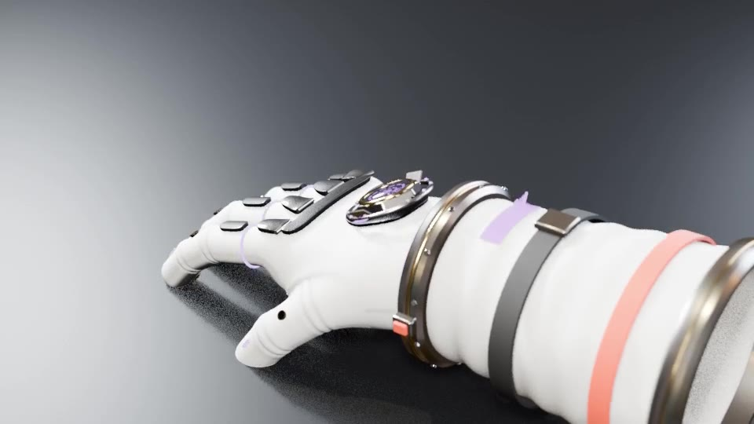

LUNA-X Adaptive Wellness Glove
The crew's hands-on link to the habitat's LUNA AI. One glove that monitors hand health, scans plants and materials, speaks through light and vibration, and takes gesture commands, so astronauts don't need a giant screen to talk to the habitat.
Low-settings preview render (Blender EEVEE, 960×540). Click a chapter to jump to it.
Why a glove
A real NASA problem
Hand injuries (fingernail delamination, fatigue, sore knuckles) are a long-documented problem with pressurized spacesuit gloves. LUNA-X watches the hand itself: tremor, grip force and fatigue, before they become injuries.
One product, two modes
The sensor liner is the core product. Crew wear it on its own inside the habitat (IVA mode: greenhouse, lab, wellness checks), and it slides inside the pressure glove for moonwalks (EVA mode).
Tied to the habitat
Every reading goes to LUNA, the habitat's AI that monitors crew psychological health. The glove becomes the habitat's quietest wellness sensor.
The model
White outer fabric with silicone grip pads, a segmented carbon-fiber knuckle guard, a titanium wrist disconnect with a gold bearing and status ring, the LUNA Wellness Processor on the back of the hand (glass dome, gold bezel, spinning AI ring, cooling vents), finger LED rings, fingertip status lights, gold fingertip sensor pads, haptic pods, and a cuff status display.
Animation pack



Light protocol
Six states, each with its own blink pattern so they're readable for color-blind crew too. Red and amber follow the warning/caution convention used in spaceflight and aviation displays.
| State | Pattern | Meaning |
|---|---|---|
| Green | Steady glow | Nominal, all systems normal |
| Cyan | Breathing pulse | LUNA processing / scanning |
| White | Rotating chase | Navigation guidance, fingertip torches |
| Purple | Double pulse | Crew call, wellness check-in, confirmation |
| Amber | Slow blink, 1 Hz | Caution (e.g. fatigue rising) |
| Red | Fast strobe, 4 Hz | Warning / emergency broadcast |
Gestures & haptics
Gestures (no buttons)
- Pinch: select / accept
- Open palm: open the interface
- Double tap: open status
- Fist held 2 s: acknowledge an emergency (a plain fist would fire every time you grab a handrail)
Haptic language
- 1 pulse: notification
- 2 pulses: recommendation
- Long pulse: important message
- Triple pulse: crew alert / confirmed
Micro-mechanics
- AI activity ring spins faster while LUNA thinks
- Fingertip sensor pods extend to scan, then retract
- Cooling vents open during heavy processing
Layer breakdown
| # | Layer | What it does |
|---|---|---|
| 1 | LUNA sensor liner | Worn alone in the habitat. IMUs (tremor, motion), grip-force pads, PPG heart-rate + EDA stress sensors, haptic motors, coolant lines, micro pumps |
| 2 | Pressure bladder | Urethane; holds suit pressure |
| 3 | Restraint layer | Polyester; keeps the bladder's shape |
| 4 | Insulation | Aluminized Mylar; thermal protection |
| 5 | Outer layer + hardware | Outer fabric, silicone grip, carbon knuckle guard, titanium wrist disconnect, LUNA core |